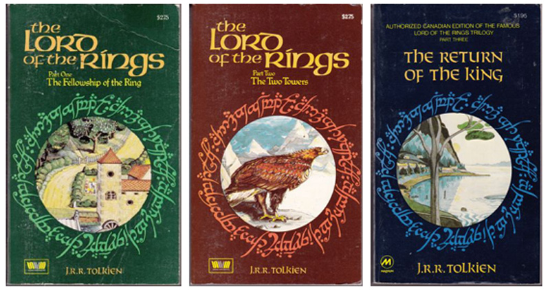

Thousands of years before the events of the novel, the Dark Lord Sauron had forged the One Ring to rule the other Rings of Power and corrupt those who wore them: the leaders of Men, Elves and Dwarves. Sauron was defeated by an alliance of Elves and Men led by Gil-galad and Elendil, respectively. In the final battle, Isildur, son of Elendil, cut the One Ring from Sauron's finger, causing Sauron to lose his physical form. Isildur claimed the Ring as an heirloom for his line, but when he was later ambushed and killed by the Orcs, the Ring was lost in the River Anduin.
Over two thousand years later, the Ring was found by one of the river-folk called Déagol. His friend[12] Sméagol fell under the Ring's influence and strangled Déagol to acquire it. Sméagol was banished and hid under the Misty Mountains. The Ring gave him long life and changed him over hundreds of years into a twisted, corrupted creature called Gollum. Gollum lost the Ring, his "precious", and as told in The Hobbit, Bilbo Baggins found it. Meanwhile, Sauron assumed a new form and took back his old realm of Mordor. When Gollum set out in search of the Ring, he was captured and tortured by Sauron. Sauron learned from Gollum that "Baggins" of the Shire had taken the Ring. Gollum was set loose. Sauron, who needed the Ring to regain his full power, sent forth his powerful servants, the Nazgûl, to seize it.
